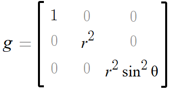

Figure 30-1. The ubiquitous, slightly iniquitous rubber sheet model of gravity.
Every book needs a Monty Python quotation, doesn't it? I have chosen one for the title of this section of the book, in which I will include the third of my "Three Things About Gravity ..." essays and rest my case for a three-dimensional conception of spacetime. Four shalt thou not count. Five is right out (looking at you, Hermann Weyl and Michio Kaku). Whereas the first two sections were mostly informational, this section is of a more "editorial" nature.
Einstein himself failed to convey some simple and still-important Newtonian concepts in the presentation of his theory of gravity, even dismissing them in a way that may continue to cause some confusion for serious students, as Einstein's approach to explaining general relativity persists beyond his time. And so I introduce the third subject in this series of "Three Things," the so-called "equivalence principle": the notion that
Gravity and uniform acceleration are indistinguishable.
Einstein’s general theory of relativity is often regarded as the crowning achievement of the greatest scientific mind in history. His name is synonymous with genius. It would seem arrogant for me as an amateur to criticize his writings. Nevertheless, after sifting through many textbooks and lectures, I have found some credible voices who have expressed criticisms similar to mine. Ironically, this is more agreement than I have yet found regarding the points I made in the first and second parts in this series.
After publishing in 1905 his groundbreaking analysis of uniform motion at extremely high speeds, Einstein struggled for ten years to generalize his theory of relativity to accelerated systems. His breakthrough, he said, came as "the happiest thought of his life:" that if a person were to fall from a rooftop, he would feel weightless for the duration of his fall. He began thinking about the similarities between falling freely in the presence of gravity and being in a place where there was no gravity at all; and this thought process led to the completion of his general theory of relativity in 1915. When the theory was proven correct by astronomical observation in 1919, Einstein became an instant celebrity.
Einstein’s "equivalence principle" — the idea that all forms of acceleration are functionally equal, whether they are due to gravity or some other force — is still taught in most introductory texts on Einstein’s general theory. The idea is that if you wake up in an elevator or some other enclosed space and have no way of looking outside, you will have no way of knowing for certain whether the floor is pushing on you due to Earth’s gravity or whether the elevator is accelerating upward through the shaft of a rocket ship blasting its way through space. Likewise, if you wake up floating in the middle of the elevator, you will have no way of knowing if the cable has been cut or if you are adrift in space.
Einstein once wrote of a man in a room-sized "chest," and a rope that pulled the chest upward with constant force through a space that was otherwise empty and not subject to gravitational forces. Feeling the force of the floor against his feet and seeing the rope attached overhead, and noticing that any items he lets fall will do so, such a man would reasonably conclude that the chest was suspended at rest in a gravitational field. "Ought we to smile at the man and say that he errs in his conclusion?" Einstein asked. "I do not believe that we ought if we wish to remain consistent; we must rather admit that his manner of grasping the situation violates neither reason nor known mechanical laws. Even though it is being accelerated with respect to [another space], we can nevertheless regard the chest as being at rest."
What Einstein and many science authors since his time have failed to mention is that there is a way to detect the presence of gravity in a space, and to distinguish between it and the kind of acceleration provided by a rope or the engines of a rocket. At least there is theoretically a way to do this, provided that gravity is strong enough, observations are long enough, measurement is precise enough, and/or the space is large enough. To accomplish this, we release a number of objects from rest at various points in the enclosed space (the chest or the elevator) and observe how they fall. It is not enough to measure whether the objects fall, for as we have discussed, this fall can be caused by forces other than gravity; one must measure differences between how the objects move. If gravity is present, objects on opposite sides of the space will drift apart; these sides will then be identifiable as the "top" and "bottom" sides of the space. If we draw an imaginary line between top and bottom, we will also observe that all of the objects in the space will contract toward that line. Why is this so?
Though Newton’s law of gravity has been superseded by relativity, both theories agree that the strength of gravity diminishes with distance from the mass causing the attraction, and that the direction of gravity’s pull varies from place to place. And it is these two principles that are too often glossed over when emphasizing"equivalence."
The answer to the previous question — why objects in a space which is affected by gravity drift apart in one direction and converge in another direction — is that gravity is non-uniform in that or any other space. Gravity is stronger at the bottom of the space than at the top, which is further away from the source of gravity; the objects at the bottom are therefore pulled down faster than the ones at the top, and the objects drift apart from top to bottom. Gravity pulls objects toward a single point (the center of gravity) rather than pulling all of them in strictly parallel directions; as the objects approach the center of gravity, objects at equal distances from the center will converge. These two related phenomena which make gravity measurable regardless of one’s frame of reference are known as tidal forces, and as you may guess, they are the reason the moon is able to cause tides on the Earth. The tidal forces surrounding a black hole are predicted to be so strong as to be deadly. An astronaut falling into a black hole feet first would eventually find that the pull of gravity on his feet would be so much stronger than the pull on his head that he would be stretched and torn. Among scientists, the short-hand term for this gruesome fate is "spaghettification."
I'm going to say this again for emphasis: There is no such thing as a uniform gravitational field. Neither Newton's or Einstein's equations allow for such a thing, any more than Maxwell's equations leave open the possibility of a magnetic monopole: ∇ ∙ B = 0.
There is another "equivalence principle" often discussed in introductory texts in relativity, though it has been known since Galileo’s time. This other equivalence principle is the equivalence of gravitational mass to inertial mass, which means simply that the amount of force required to accelerate an object is in direct proportion to its weight, and vice versa. Newton gave us two separate formulas for calculating mechanical and gravitational force, each of them having a term for mass, and it need not be taken for granted that the "mass" in one formula meant the same thing as the "mass" in the other. The equivalence of gravitational and inertial mass is not the equivalence principle which I intend to criticize, though in Einstein's mind both types of equivalence shared a connection. Rather, I wish to conclude this series of essays on gravity by pointing out some of the various ways in which physics educators support or contradict Einstein’s regrettable idea of the equivalence of gravity and uniform acceleration.At one end of the spectrum are Chad Orzel’s statements that "gravity and acceleration are indistinguishable" (quoted above) and that "The key to understanding Einstein’s happiest thought is Galileo’s result . . . If there were any difference between the effects of gravity and any other force, some objects would fall faster than others and allow the falling observer to distinguish [between the two]."
James B. Hartle, author of Gravity: An Introduction to Einstein’s General Relativity, establishes "the equivalence of uniform acceleration and a uniform gravitation field," omitting any mention that gravitational fields are inherently non-uniform. Robert Resnick and David Halliday do likewise in Basic Concepts in Relativity and Early Quantum Theory.
N. David Mermin, in It’s About Time, provides the disclaimer which Hartle, et al. do not: " The direction in which things accelerate under the Earth’s gravity is not fixed; it is directed toward the center . . . And the magnitude of that acceleration depends on the distance [from the Earth] . . . But if one is only interested in a region that is small on the scale of the whole planet . . . then the magnitude and direction . . . hardly vary at all. One says that the gravitation field is uniform. " (emphasis mine)
It is valid to assert that Einstein’s equivalence principle is understood as being in the context of small extents of space and short durations of time. In such cases, tidal forces would not be evident. But this point of view is almost comical: "Gravity creates conditions just like uniform acceleration, at least in cases where it is so weak that some of its effects are too small to be measured." It seems a Zeno-like argument, examining the flight of an arrow at instants in time and questioning whether the arrow is really moving at all.
Bernard Schutz, in Gravity From the Ground Up, writes: "If gravity were everywhere uniform we could not distinguish it from acceleration. This is the sense of the word equivalence in equivalence principle. Therefore, the changes in gravity over distances tell us that we are really dealing with gravity and not simply a uniform acceleration. We will elaborate on this subject in Chapter 5 . . . " Schutz’s Chapter Five is entitled "Tides and tidal forces: the real signature of gravity."
At the other end of the spectrum (and in contrast to Orzel’s statements above) are arguments that the ability to detect gravity’s tidal forces falsifies the equivalence principle to some extent.
In the audio lecture series Einstein’s Theory and the Quantum Revolution, Richard Wolfson argues that tidal forces are the only real aspect of gravity and that all others can be made to disappear by making a change in one’s frame of reference (lecture 13). On that same note, Hermann Bondi said, "A gravitational field is a relative acceleration of neighboring particles."
The equivalence principle is discussed as one of Einstein’s Mistakes by Hans Ohanian:
It should have given Einstein pause that his 1911 calculation of the bending of rays of light, which was based on the Principle of Equivalence, yielded a result half as large as the new calculation based on the theory of gravitation. . . . For the physicist enclosed in a box, the implication is clear: the bending of a ray of light in an accelerated box is half as large as the bending in a box at rest in a gravitational field. This means that acceleration and gravitation are not interchangeable ‐ and the Principle of Equivalence fails!
He goes on to say, "Although Einstein was an avid sailor and sailboats were his favorite hobby, he ... failed to recognize that the tides undermine the Principle of Equivalence that he adopted as the cornerstone of his theory of general relativity. "
A common problem in all three of the misconceptions I have discussed in this series of "Three Things" is the problem of measurement. In the laboratory, we find it a challenge to measure the miniscule difference between the parabolic trajectories predicted by Galileo and the elliptical ones predicted by Newton, or to measure the tidal forces which distinguish gravity from uniform acceleration. We are unable to measure any difference in the rate of fall of a heavy object as opposed to a lighter one.
These challenges all arise from the weakness of Earth’s gravity and indeed of gravity in general. Gravity does not seem weak when it causes serious injury, but when one pits gravity against electricity or magnetism, it pales in comparison. A little bit of electric charge on a balloon can give that balloon the ability to defy the gravitational attraction of our entire planet.
This relative weakness has the further consequence that we do not know to a high degree of precision what the strength of gravity is. The gravitational constant used to relate mass and distance to force in Newton’s theory of gravity is only known to a few decimal places. An 18th-century experiment to determine the force between two masses in the laboratory gave results that were less than 1% different from the results of the best modern experiments. In other words, over two hundred years of improvements in theory and technology can only compensate so much in the measurement of an extremely weak force. Walter Lewin, at the end of his first lecture on classical mechanics, says that a Nobel Prize would be in order for any scientist who can experimentally demonstrate that the time for an object to fall is dependent on its mass.
"One geometry cannot be more true than another; it can only be more convenient. Now, Euclidean geometry is and will remain the most convenient." ‐ Henri Poincaré (1854-1912)
In this chapter we are going to pick up a couple of earlier threads and weave them together. In Chapter Seventeen, we looked at the geometry of curved two-dimensional spaces, and in Chapter Twenty-Five we learned that the theory of relativity explains gravity as curvature in a three-dimensional space and/or a four-dimensional spacetime. As promised, I will better explain what all of that means.
Many texts on general relativity share Einstein's enthusiasm for the so-called principle of equivalence, and begin there. Having dissected this idea in the previous chapter, we should find it only of historical interest here. The true key to general relativity, one which Einstein himself seemed to regard as a mere afterthought, is found in the curvature of three-dimensional space. This is by no means the full extent of the theory, but rather our entry point to a true and intuitive understanding of it.
To find our way through general relativity, we will approach its concepts in an order reverse of that in which Einstein worked through them. Einstein started first with a questionable but useful inspiration to regard gravity as indistinguishable from uniform acceleration (his Principle of Equivalence, which he called his "happiest thought"). From there he proceeded to the conclusion that clocks must run more slowly in accelerated frames of reference. Einstein based an early attempt at a theory of gravity on this difference in clock rates, which difference is now called the "curvature of time," an odd phrase if ever there was one. This preliminary effort on Einstein’s part resulted in a calculation of the bending of light around heavy bodies that essentially agreed with Newton’s theory of gravity and gave only half of the currently-accepted value. Einstein needed to add the curvature of space to his formulas, to finally arrived at his theory of curved "spacetime." In our study, we may begin at the end; we are presented with Einstein’s brilliant solution of curved spacetime and given the somewhat daunting task to comprehend it. We will first find a foothold in the idea of curved space, the concept that Einstein included last. From there we will be able to work backwards and deduce the so-called "curvature of time," a consequence of curved space that turns out to be nothing more than Newtonian gravity; and as it turns out, we will need neither resort to Einstein’s equivalence principle nor to the concept of time as a physical dimension.
It is relatively rare to see a professor write about the "curvature of space" rather than the curvature of "spacetime," but I find great teaching value in the former approach. It is simpler, easier to visualize, and thus, in my opinion at least, more powerful as a concept. In personal correspondence I received from a qualified professional, the "curvature of space" approach has been criticized as "oversimplified," and I cannot disagree inasmuch as I have yet to see it presented in the fullness of detail I will provide below. Kenneth Lang writes, "According to Einstein’s theory, space is distorted and curved in the neighborhood of matter. In effect, space has both content and shape. The curved shape is molded into space by its content, the massive objects." And: "Flat Euclidean space ... describes a world which is without matter ... the amount of space curvature is greatest in the regions near the object, while further away the effect is lessened."
A common method of helping students to visualize the curvature of "spacetime" is to show a heavy object such as a bowling ball resting on a rubber sheet. The bowling ball represents a source of gravitational force. If a smaller ball, such as a marble, is rolled in the vicinity of the larger one, rather than continuing to travel in a straight line it will curve toward the bowling ball, perhaps eventually colliding with it after falling into the dent created by the bowling ball. While not without merit, this representation is unsatisfying for several reasons.
Figure 30-1. The ubiquitous, slightly iniquitous rubber sheet model of gravity.
First, it relies on a presumed downward gravity to demonstrate how gravity is created by the distortion of the sheet; it would not work as obviously if the dent in the sheet pointed in any direction other than downward. If we rolled a marble toward a bump rather than toward a depression, we would expect it to curve away rather than toward the bump. Nevertheless, we are supposed to understand that gravity is purely a result of the curvature of the sheet itself, not its orientation in any other gravitational field. Only seldom have I seen the "rubber sheet" model used to better effect, showing for example that light cones embedded in the sheet are bent inward by the curvature of space surrounding a large mass; and this diversion is shown as being representative of the pull of gravity regardless of the orientation of the sheet. However, this implies that the upward direction in the model corresponds to the future; this relates to another disadvantage of this model in general.
Second, this model of gravity requires space as we know it to be curved along some additional dimension of space; part of the two-dimensional sheet is pushed along a third dimension to give it curvature. Are we thereby to understand that three-dimensional space curves in the fourth dimension of time? Or does it curve into some other fifth dimension? No, neither of these is the case, and some authors are careful to point this out, though there are voices to the contrary, speaking of "a three-dimensional space that is curved in the fourth dimension." Lawrence Krauss is among those who do not find a fourth dimension necessary to explain the curvature of the other three, but recognizes the difficulties in grasping such a concept:
It is virtually impossible for us, who are confined to live within a curved three-dimensional space, to physically picture what such a curvature implies. We can intuitively grasp a curved two-dimensional object, such as the surface of the earth, because we can embed it in a three-dimensional background for viewing. But the possibility that a curved space can exist in any number of dimensions without being embedded in a higher-dimensional space is so foreign to our intuition that I am frequently asked, "If space is curved, what is it curving into?"
I think Dr. Krauss has grossly overestimated the difficulty in
visualizing the curvature of which he speaks. And he is not alone in doing
so.
Before going into the third reason I find the "rubber sheet" model unsatisfying, I will present an alternative. A topographical map shows the elevation at various points on the Earth using contour lines. These contour lines form closed loops and represent a continuous path where the elevation is equal. Where these lines are far apart, the land is relatively flat. Where they are bunched closer together, there is a steep grade. The map also has a grid of north-south and east-west lines that divides the map into squares. Because the boundaries of surfaces shrink when the surface becomes wrinkled, map squares having a greater density of contour lines contain a greater amount of surface area. There is more "area within the area." If you were to draw a circle or square around a steep hill surrounded by flat plain, you might say that the surface area contained by the circle is bigger than the area implied by the circumference of the circle or the perimeter of the square. Extending this concept to three dimensions, you might say that an enclosed curved space is "bigger on the inside than on the outside," a concept already familiar in science-fiction and fantasy which many students will therefore readily seize upon.

Figure 30-2. A topographic map of Stowe, Vermont. The brown contour lines represent the elevation. The contour interval is 20 feet.
Figure 30-3. Changes in elevation are represented by contour lines on a flat surface.
This is the idea I prefer for visualizing the curvature of space: that three-dimensional space is denser in the presence of mass, just as the contour lines are denser on steeper areas of a map. But in the case of curved space, there is no hill rising upward, nor valley sinking downward; nor is there necessarily any fourth dimension into which the three dimensional space is bent. This model requires no preferred orientation to show its curvature, not does it require that the space’s curvature gives it extent in some additional direction. It only requires this small but highly significant amendment to our ideas of geometry as described so far; I will show some of the desirable consequences below, as well as some of the greater implications.
Ironically, even though Hans Ohanian’s description of curved space is among the best I have yet seen, he also writes one of the more emphatic denials that such a thing can be visualized:
Curved three-dimensional space — or even worse, curved four-dimensional spacetime — is impossible to visualize. ... Some mathematicians claim they can visualize a curved three-dimensional space, but if so, they are crazy, that is, crazy in the sense of abnormal. The best a normal person can do is to visualize a curved surface, such as the surface of an apple or the surface of the Earth. Such a surface is a two-dimensional curved space which curves into the visualizable third dimension. The curved four-dimensional spacetime of general relativity curves into a fifth, sixth . . . or even a tenth dimension.
Ohanian’s expectations of what curved three-dimensional space should look like are burdened by the idea of additional dimensions — he writes, "If our three-dimensional space is curved, it must be curved into some dimension beyond three dimensions." — and thus he overshoots the mark, not seeing the full implications of the excellent analogy he himself provides for curved space:
[I]n a gravitational field, light propagates more slowly than outside the field. This means that in [this] regard ... the neighborhood of the Sun behaves like a large glass-filled globe encasing the Sun, so this glass slows the propagation of light. The glass is most dense near the sun, less dense further out, and it gradually fades away into empty space at large distances (where the speed of light resumes its standard [vacuum] value). Einstein recognized that such a slowing of the speed of light would bend rays of light in the same way that a glass globe bends [them] ‐ it bends rays of light that strike the right half of the globe toward the left, and it bends rays ... that strike the left half toward the right, that is, it always bends [them] toward the centerline.
If one sees that the density of the globe in this analogy is the density of space itself, then it is not difficult to see how the effects of gravity follow from it, as I will demonstrate. The bending of light rays that Ohanian refers to here is the same phenomenon referred to in Chapter Twenty-Six, where we considered Fermat's Principle (Figure 14-6 there, and Figure 30-4, below). As light passes from a less dense to a more dense medium, it changes direction.
Figure 30-4 (animated). The refraction of light as it passes from a less dense to a more dense medium. Source: Wikimedia Commons.
Gravity changes the "density of space," or the metric by which space is to be measured at one place versus another. The way that this change in metric results in curvature is different in three dimensions than it is on two dimensions, which should not surprise us too much after considering in Chapter Seventeen how two-dimensional curvature differs from one-dimensional curvature. The effect of gravity is to curve space both positively and negatively at any given point; the curvature in any given place will depend on the orientation of that plane. This double curvature results in the tidal forces that cause the parallel paths of freely-falling objects to converge in some directions and diverge in others. At a given point in space, gravity will cause parallel paths near that point to converge in the plane normal to the direction of gravity at that point, due to the positive curvature in that plane; and to diverge near that point in planes having a normal that is perpendicular to the direction of gravity at that point, due to the negative curvature in those planes. These curvatures are illustrated below.
The idea that the same point in three-dimensional space can be a location of both positive and negative curvature ‐ depending on the plane being considered ‐ is analogous to the way a negatively-curved two-dimensional surface has two centers of curvature on opposite sides of that surface, as discussed previously. A two-dimensional surface may have only positive or negative curvature at any point, just as a one dimensional line may at any point on that line only curve toward or away from another point outside that line; but just as a two-dimensional surface may curve both toward and away from an exterior point, three-dimensional space may be both positively and negatively curved.
Wheeler discusses this "double curvature" extensively in Gravity and Spacetime and provides equations quantifying the curvatures described above; the variously-oriented planes are treated by Wheeler as various sides of an imaginary cube having one side facing directly toward a (mostly) spherical source of gravity like the Earth. For each side of the cube, the curvature depends on the mass m of the source of gravity and the radius r from the center of the Earth. On the facing (toward or away from the mass) sides of the cube, the curvature is proportional to 2m/r3. On the four non-facing sides, the curvature is proportional to ‐m/r3. Curvature is thus positive on two faces and negative on the other four. Summing the curvature of all six sides, these equations neatly balance to zero, and the curvature is not surprisingly in units of density: mass divided by volume. This pairing of sides — one pair of positively-curved sides and two pairs of negatively- curved sides — corresponds directly to the dimensions of space in which gravity acts: one parallel to the force of gravity, or "vertical"; and two perpendicular or "horizontal." The tidal forces tend to increase the vertical separation of freely-falling objects and reduce their horizontal separation in both horizontal dimensions.
The illustrations below show the curvature on Wheeler’s imaginary cube sides, and as far as I am aware, they are an innovation on my part. A single black circular contour line, representing a fixed radius from the mass, is drawn through each cube side, though an arbitrary number of lines could be drawn in the same manner as magnetic field lines. On the non-facing sides of the cube, the contour lines tend to cross the side, and do so most clearly at great distances from the mass as the radius increases and the proportion of arc contained in the cube decreases. In these illustrations the radius is small, to show a case in which the center of mass is not far from the edge of the cube.
A triangle is drawn in red between three points on the cube’s side. These points are connected by a representation of the shortest possible path between them. Since space is more dense on the inside of the contour line than on the outside, the paths that must cross this contour line are curved in order to lessen their distance through this denser space. The result is that the interior angles of this triangle are less than 180 degrees. This side of the cube is thus shown to have negative curvature, as do all of the four sides not facing directly toward or away from the mass.
Figure 30-5. Negative curvature in a plane parallel to the direction of the gravitational field.
On the facing sides of the cube, the circular contour lines are centered in that side, since the center of that side is nearest the mass. Below, I have chosen three points on this side corresponding to the three points chosen above, and drawn the lines between them in blue, again representing the shortest possible path between the points. And again, since the space inside the contour line is more dense than the space outside, the lines curve to lessen their distance through that denser space. But in this case, that curvature results in the interior angles of the triangle adding to more than 180 degrees, and the resulting curvature is positive.
Figure 30-6. Positive curvature in a plane perpendicular to the direction of the gravitational field.
Thus we see a third failure of the "rubber sheet" model of curved spacetime. The sheet is stretched by the bowling ball into a shape having only a negative curvature in the space surrounding the ball, and a strictly positive curvature where it contacts the ball; whereas the curvature produced by the gravity of such a mass is not so.
All right, then, we have defined the curvature of space. But what is this "curvature of time" that is occasionally spoken of? One of its effects is that clocks run more slowly near a source of gravity than they do farther away from that source. But why do the clocks run more slowly near sources of gravity? The answer is found in the curvature of space that we have just discussed, and is best illustrated using a "light clock." As the clock nears a massive object, the space it occupies is more dense. The space between the mirrors is therefore greater and the path for one "tick" is longer, though the clock is stationary, and regardless of the direction the mirrors are oriented in. Because this same slowing is applicable to any process by which time may be measured, we say that time passes more slowly in regions of high gravity. The classical theory of gravity touched upon this idea by predicting that the frequency of light would change as a light beam progressed through different altitudes; Einstein extended this much further to connect time itself to the strength of gravity’s pull.
The curvature of space gets us a little closer to answering the question of why things fall down. For any two masses at relative rest, there are numberless frames of reference in which they are both moving and the curvature of space would explain why their paths curve toward one another. This still leaves us a little at a loss, however, in explaining why their "paths" begin to converge when neither of them is moving, in that one frame of reference at rest relative to both of them. Maybe it's enough to suppose, as I did in Chapter Twenty-Five, that "time" is a basis vector that changes direction with time so that "up" vectors (or even zero-valued vectors associated with bodies at rest) eventually become "down," and "down slowly" becomes "down faster." The changing direction of this arrow, this basis vector, would be another sense of "the curvature of time."
Or we might wave our hand and say that both objects, though stationary in space, are moving along the time axis of a four-dimensional spacetime, and those are the converging "paths." We would attribute the attraction to the "curvature of time" in this reference frame with the added effect of the "curvature of space" in all others. Maybe that's good enough for some, or maybe the idea only becomes satisfactory if by "paths through time" it is understood that we mean paths through one or more of the three dimensions of ordinary space, albeit on a sub-microscopic level. I will develop this idea further in Section Four, where I will also highlight some further quantum-mechanical considerations which make "the curvature of time" less necessary for our thinking and make it easier for us emphasize a three-dimensional curved space. Three dimensions of curvature I can handle, but four are beyond my ability to visualize.
Karl Schwarzschild was the first to come up with a non-trivial solution to the field equations for Einstein's general theory of relativity. Like Hermann Minkowski, whose most famous contribution to science was in the context of special relativity, Schwarzschild died within months of his great accomplishment. Like the physicist John Henry Poynting, or the mathematician Elwin Bruno Christoffel (not to mention the famous plumber Thomas Crapper), Schwarzschild had a name suggestive of his best-known legacy. Schwarzschild is German for "black shield," and Schwarzschild's solution to Einstein's equation is what gives us black holes. Schwarzschild calculated the radius at which the event horizon of a black hole would form around a given mass, which is naturally named the Schwarzschild radius in his honor.
"Black holes" were given their name by John Wheeler in the late 1960s due to the fact that light would be unable to escape from the interior of their event horizon due to the extreme pull of gravity at that distance . . . if, in fact, they exist. Evidence for the existence of such exotic objects seems to be growing, but the problem is philosophically a bit sticky, as we will discuss.
The Schwarzschild solution describes the metric of spacetime in the
neighborhood of a single, spherical, non-rotating mass. For any such mass
m (even a bowling ball), there is a Schwarzschild radius, 2Gm/c2;
if the given mass is dense enough to fit inside this radius (which in the
case of the bowling ball would be ridiculously small), then this radius
defines a spherical surface near which the math gets weird. In a geometry
determined by radial distance from a point, it makes sense to use a
radius-based coordinate system rather than a Cartesian one. In Chapter
Seventeen (Figure 17-23), we saw the metric tensor for a flat,
two-dimensional polar coordinate system. We need to work our way up to two
more dimensions and add curvature to the mix. The metric tensor for a flat
space of three dimensions in spherical coordinates (with r,
θ, and φ standing for something similar to
altitude, latitude and longitude respectively) is:

Figure 30-7. The metric tensor for a flat space of three dimensions in a spherical coordinate system.
And small distances ds in this space would be calculated as follows:
Figure 30-8. The application of the metric tensor for a flat space of three dimensions in a spherical coordinate system.
For those of us that either don't remember or didn't quite grasp the lessons in Chapter Seventeen, I will translate. First, let's multiply out the matrix equation in Figure 30-8:
ds2 = dr2 + r2dθ2 + r2sin2θdφ2 = (dr)2 + (rdθ)2 + (rsinθdφ)2
Equation 30-1. The metric of a flat space of three dimensions in a spherical coordinate system.
What this is saying is that in a spherical coordinate system, distances can depend on the radius or angle you are measuring from. This is similar to measurements in a polar coordinate system in which, for instance, if you are at the north pole and something in front of you takes up ten degrees of the horizon in your view, the width of that thing (ds) will be proportional to its distance from you (r) and that ten-degree width (dθ). This can also be seen in the way that lines of longitude get further apart as they extend from the pole, even though the coordinate difference dθ between them remains the same. For small distances, dr, dθ and dφ are perpendicular components of the vector ds, so their squares can be added to get the square of ds, using the Pythagorean theorem.
Extending Figure 30-8 to a flat four-dimensional spacetime with coordinates of (ct, r, θ, φ), we have the following:
Figure 30-9. The application of the metric tensor for a flat spacetime in a polar (spherical) coordinate system.
The metric in Figure 30-9 is simply the Minkowski metric shown in Chapter i2 (Equation ii-5), but with the vector components in a different order (the time component is first rather than last, and its corresponding "-1" has moved to upper left from lower right in the metric), and with (r, rθ, rsinθφ) substituted for their Cartesian equivalents (x,y,z). Doing the matrix multiplication in Figure 30-9 gives us the equivalent of a familiar spacetime interval (Equation ii-1), but in polar coordinates:
ds2 = dr2 + r2dθ2 + r2sin2θdφ2 - c2dt2= (dr)2 + (rdθ)2 + (rsinθdφ)2 - (cdt)2
Equation 30-2. The metric of flat spacetime in a polar coordinate system.
Now that we have the metric for a flat spacetime to make comparisons with, let's look at the Schwarzschild metric. To reduce clutter, I will represent the quantity (1 - 2Gm/rc2) by the capital letter S (just to keep from overusing the Greek and Roman letters, I wanted to try an Arabic or Hebrew letter here, but alas, my text editor gets really confused by letters from right-to-left languages).
Figure 30-10. The Schwarzschild metric and its application.
There's quite a bit to unpack here. The important thing to look at is what happens as r decreases to approach 2Gm/c2; 2Gm/rc2 approaches one and therefore S (1 -2Gm/rc2) approaches zero.
ds2 = dr2/S + r2dθ2 + r2sin2θdφ2 - Sc2dt2= (dr)2/S + (rdθ)2 + (rsinθdφ)2 - S(cdt)2
Equation 30-3. The metric of spacetime in the Schwarzschild solution.
The time term S(cdt)2 also goes to zero, and the radial distance term dr2/S blows up because of division by near-zero. In effect, time and space become so severely curved near the Schwarzschild radius of a super-dense body that a satellite object approaching that radius (as observed by someone far away) comes to a near stop in both space and time. The incremental radial distances grow so large that they take a near-infinite time to traverse. Let's imagine a light clock falling toward this super-dense mass now. The metric of space is so distorted that the width (and height and depth) of this clock represents a distance so great that it takes a near-infinite amount of time for a light ray to cross it; the clock and time itself appear to stop at the limit of the Schwarzschild radius. at least as observed by someone not falling along with the clock and subject to the same changing metric.
From our viewpoint far away from any such mass, we might expect that such distortions of space would prevent any super-dense mass from being able to contract sufficiently to completely shrink inside its own Schwarzschild radius and for a black hole to form. Such a process, creating a presumably infinite volume inside a finite radius, would take an infinite amount of time. The science seems far from clear on this point. Richard Wolfson says that there is a valid philosophical viewpoint in which black holes can never form because those of us outside of one would never see the final piece of material cross the event horizon. Leonard Susskind seems to think otherwise. I remain skeptical.
A common argument around this point is to consider the problem from the reference frame of an infalling person. As you fall into the (perhaps nascent) black hole, your clock seems to be working just fine. Since one tick of your clock represents an eternity to an outside observer, you have no problem crossing what appears from the outside to be near-infinite distances. You cross the event horizon without incident. You have entered "the undiscovered country from whose bourn no traveller returns," and dropped off of the map of the rest of the universe. You have done the impossible and arrived at the far end of time and space, at least as it would have been measured by outside observers, who have long since vanished as their universe exhausted the last of its entropy. You might raise a glass in their memory before being shredded yourself by the tidal forces awaiting you nearer the black hole's center.
In this line of reasoning, the infinite distances encountered at the Schwarzschild radius are merely a problem associated with our choice of coordinate system; and comparisons might be made to similar problems in calculating the length of a curve that crosses the origin of a polar coordinate system. These assertions ring hollow when we consider that no one has ever been observed to be frozen in space and time near the north or south poles, nor would we have any reason to expect to see such a thing, as we would at the event horizon of a black hole.
As helpful as I find the curved-space paradigm for understanding general relativity, it does not appear to be very popular. Is that because it doesn't carry the air of mystery that might sell more books? Even after piecing it together from clues left by Taylor, Wheeler, and Ohanian, it was easy for me to get nervous and wonder if I had misunderstood in some way. My mind was put at ease to find additional confirmation in Relativity Made Relatively Easy by Andrew Steane. After discussing a "hot plate" model of curved space reminiscent of Henri Poincaré's disk (Chapter Seventeen), Steane writes:
We do not have to think of gravity directly in terms of curvature: we can think of it as an 'expansion field' which acts on an underlying flat spacetime (like the flat hot-plate) and influences all types of clock and ruler. ... With this point of view you have the right to insist that spacetime is utterly flat, but has in it a field (the gravitational field) whose effect is to cause time dilation and length contraction of all processes and all types of object by the same factor. ... [This] result is indistinguishable from a curved spacetime ...
I came to my "contour map" visualization of gravity rather gradually and naively, beginning with the fanciful supposition that light passed through matter more slowly due to some mysterious distortion of space. I found my first encouragement in a draft manuscript on Edwin Taylor’s website (for Exploring Black Holes, a book he had developed with John Wheeler and was then rewriting with Edmund Bertschinger). Space, it said, is stretched in the vicinity of massive objects, even (in the case of black holes) outside of any event horizon. This idea became central to my understanding of gravity, and eventually the key for understanding its effects. But it was only in the preparation of this essay that I realized that the direction I have taken this idea may be considered an alternative to Einstein’s concept of general relativity rather than a concise explanation of it.
I had naively assumed that my description of curvature in three dimensions was one of many possible Riemannian "manifolds," or perhaps at least a "pseudo-Riemannian" manifold, as Minkowski space is called. Instead, I found that Riemann had given as a postulate the very principle that I had discarded:
Measure-determinations require that quantity should be independent of position, which may happen in various ways. The hypothesis which first presents itself, and which I shall here develop, is that according to which the length of lines is independent of their position, and consequently every line is measurable by means of every other.
In Riemann’s system, space does not "vary in density." The distance between the mirrors on the light clock remains the same whether the clock is deep within a strong gravitational field or in its weaker outer reaches. Just as Euclid had postulated that parallel lines remain equidistant, Riemann proceeded on the assumption that scales of distance are uniform in a region of n-dimensional space. At first I worried that I had made a misstep in rejecting Riemann’s postulate, but then I realized that Einstein might have done so himself, had he gotten different mathematical advice. Special relativity was a tentative first step in this direction, making measured lengths vary between observers in relative motion. General relativity could be interpreted as having delivered the final blow in making lengths of measure vary between regions of stronger and weaker gravity. Though he may not have realized it, Einstein’s theory of gravity is most emphatically one of non-Riemannian geometry.
In the Schwarzschild solution, the 1/S term of the metric tensor that pairs with radial distance dr is itself dependent on radius r (S = 1 - 2Gm/rc2). One can argue that the fundamental theorem of Riemannian space still applies with a negative element in the metric tensor per Minkowski, but with distances in the r direction depending on the value of r itself, the Schwarzschild metric is clearly "out of bounds" and describes a manifold of an entirely different kind.
This non-Riemannian geometry appears to correspond to the "shape dynamics" concept which Lee Smolin describes as an alternative but functionally equivalent theory to general relativity: "General relativity is more or less the opposite. Sizes of objects remain fixed when you move them around, so it’s meaningful to compare the sizes of distant things." In shape dynamics, by contrast, Smolin writes that "Size becomes relative and it becomes meaningless to compare the sizes of objects far from one another."
Interestingly, one of the earliest attempts to unify gravity with electromagnetism was based on a similar idea. In 1918, "Hermann Weyl suggested that this [unification] could happen through local variations of scale or ‘gauge’ in space," writes Stephen Wolfram. Peter Woit adds: "Weyl’s new principle of gauge symmetry allowed the use of different distance scales (or gauges) at different points. One could use a different gauge to measure sizes at different points, as long as one had a mathematical entity called a connection that related what one was doing at neighboring points. . . . Einstein quickly objected to Weyl’s gauge principle by noting that the size of a clock would change as it moved through regions containing electromagnetic fields." Weyl’s was not a bad idea; it was just not the correct application of it. General relativity is a theory showing the scale invariance of special relativity: the freely falling observer measures no change in the speed of light as space becomes more or less "dense," because the rate at which his clock ticks ‐ an indirect expression of the density of space ‐ must decrease accordingly. Wolfram also sees a three-dimensional interpretation of Einstein’s equations for gravity: "In their usual formulation, the Einstein equations are thought of as defining constraints on the structure of 4D spacetime. But at some level they can also be viewed as defining how 3D space evolves with time."
I want us to do a thought experiment. It is January 1908, and somewhere in Lower Saxony there are two trains, each heading in opposite directions. Hermann Minkowski is aboard one of them, enjoying a hot cup of coffee. The rail line is maintained well enough that the movement of Minkowski's train in no way affects his ability to enjoy his coffee; at this moment, it does not matter that both he and the coffee are moving 60 kilometers per hour with respect to the ground. But unfortunately, the same cannot be said regarding the velocity of the other train, because it is on the same track, on a collision course with Minkowski's train due to a fault in a new electrical switching system. Tragically, Minkowski is among those who do not survive the crash.At last it came to me that time was suspect! ‐ Albert Einstein
The crux of this thought experiment, and the reason I ask you to imagine Minkowski's life having ended in this manner rather than due to a sudden onset of appendicitis one year later, is that he does not give his famous address to the 80th Assembly of German Natural Scientists and Physicians that September, and as a result, his concept of a four-dimensional spacetime does not become prominent. Let us imagine an alternate history in which some other formulation of relativity takes hold in its place, one in which it is not time per se but perhaps velocity which claims the role of co-partner with position in defining an invariant spacetime. Perhaps Einstein will grumble about this one too, calling it "superfluous scholarliness," as he did Minkowski's spacetime geometry. Perhaps he will even reject it and find another path to generally relativity, ultimately being satisfied only with a solution that includes an idea like Minkowski's.
But how would this world look different from ours, a world in which something other than time was considered the "fourth dimension?" It will be interesting to consider the cultural impacts of this difference, but first of all let's consider some alternatives and whether they might have been plausible.
At the beginning of Chapter i2, we made time the fourth dimension in the invariant interval, and multiplied by velocity c to make the units come out right as a distance like the others. But is there any reason we couldn't have made velocity the fourth dimension and multiplied by a time t to make the units come out the same way? That's an entertaining thought, but when we consider that c must remain invariant while our measurements of time differ, the idea starts to look less appealing. When we have a vector space, we consider each of its axes to be associated with a variable rather than with a constant such a variable might be multiplied by. Furthermore, a velocity between any two given events really depends on the distance between them in an obvious way, and we like to keep our variables independent. Last of all, there's a nice symmetry between time and space on the one hand and clocks and meter sticks on the other.
In summary, there are good reasons to pair position with time rather than velocity when pondering the mysteries of the universe. But smarter people than me have found it compelling to pair position with velocity's close associate, momentum. Hamilton elevated momentum to a place of primary rather than secondary importance in physics, making it fundamental rather than merely the product of velocity and mass. This distinction carried forward into quantum mechanics, where we find that position and momentum are deeply connected and that light has momentum without having rest mass.
So maybe we can suspend our disbelief for a moment and think of a world in which spacetime is not three dimensions of space and one of time, but instead is composed of the usual three dimensions of space with those same three dimensions being reused as the fourth, fifth, and sixth dimensions of velocity. Or of momentum. If you can sit through Ant-Man and Iron Man doing time travel via the "quantum realm," you can bear with me on this for a couple of minutes.
And that brings me really close to the point I want to make. How many time travel movies and books would we have in such a world? How ingrained would the idea of time travel be in a culture where "traveling the fourth dimension" was understood to mean nothing more complicated than going for a walk? As preposterous as such a thing might sound at first, consider that the set of all observers with a common velocity v experience the world slightly differently than the set of observers having a different common velocity u. Clocks run at a different rate, and measures of distance are not quite the same. These two sets of observers may overlap in all three dimensions of space, but in an abstract six-dimensional spacetime, they occupy different coordinates on at least one velocity axis. Depending on the coordinate basis used, they may occupy different coordinates on all three velocity axes. I don't think it unreasonable to speak of observers traveling along one or more dimensions of velocity when their movements accelerate and they change frames of reference. In doing so, they enter a world that is measurably different from the one they left.
I like a good time travel story. Why wouldn't I? I enjoyed the Harry Potter series too, and didn't waste a single moment trying to figure out the theoretical basis of the characters’ ability to make things happen with the wave of a wand. But the problem with time travel stories, by contrast, is that they are too often regarded as science fiction rather than fantasy. And as such, they can get in the way of real learning about the relationship of space and time. Time travel offers the imaginative mind unique possibilities for adventure, narrative complexity, and righting of wrongs; it is no wonder that it is a very popular plot device and subject of speculation. As a consequence, by the time students are introduced to modern physics — namely the theory of relativity — they are likely to have several false preconceptions of time, accumulated through a childhood abounding in time machines, which make for great fiction but bad science. This problem can be exacerbated by educators who use terminology and analogies that reinforce these preconceptions rather than help to dispel them.
The idea of time travel has become so pervasive that a book like James Gleick's Time Travel: A History was inevitable. Gleick writes that "Time travel forces its way into philosophy and infects modern physics;" and that "We've had a century to think about it, and we still need to remind ourselves that time travel is not real. ... Every few years someone makes headlines by hailing the possibility of time travel through a wormhole ... I believe that these physicists have been unwittingly conditioned by a century of science fiction. They've read the same stories, grown up in the same culture as the rest of us. Time travel is in their bones."
I am not an expert on any matter of science and am not writing as an
educator per se; rather my area of "expertise" is in being a
lifelong student. It is as a student that I write, my purpose being to
point out what has been a great stumbling-block in my education and to
advocate an approach to teaching relativity — and the relationship between
space and time — that would have saved me a great deal of trouble. I will
make some effort to make what follows comprehensible to a general
audience, but this is primarily intended for those who are already
familiar with the concepts, terminology, common metaphors, and
widely-adopted diagrams associated with the teaching of relativity,
whether as a student or instructor. For the experienced student, I hope to
provide a remedy for the confusion that may have resulted from
less-effective teaching; to the instructor, I hope to offer more effective
methods. And for the theoretician, I may be able to offer a useful new
philosophy of time. I would like to repeat some quotations from the
beginning of Chapter Two:
Lee Smolin writes: "More and more, I have the feeling that quantum theory and general relativity are both deeply wrong about the nature of time. It is not enough to combine them. There is a deeper problem, perhaps going back to the origin of physics." Smolin’s Time Reborn begins with over a hundred pages criticizing the current philosophy of time, denouncing its implications for a predetermined future and calling our failure to understand time the "single most important problem facing physics." One area of physics called thermodynamics, which we will get to later, seems to establish time as an arrow of some sort, prompting questions of why it only seems to go in one direction and why certain physical processes are never seen in reverse even though the math seems not to care which direction they run in. Einstein himself struggled with the concept of time, particularly with the definition of "the present."
I will show that some confusion arises from the treatment of time as a fourth dimension, and offer an alternative that resolves many of the issues described above. I don't plan on arguing that there is no "fourth dimension" of time. I think that would mean picking a fight that won't go well for me. Instead, I plan to show that time as a fourth dimension — indeed, as anything more than an matter of accounting — is not as necessary as we might think for explaining special and general relativity.
Lee Smolin's Time Reborn was published in 2013 just as I was coming to grips with the nature of time, and remains the most enlightening and insightful book I have ever read on the subject. I will be referring to it many times in this book. But it also contains many assertions with which I could not disagree more strongly, even though they do represent a point of view held by many persons of considerable learning. From the introduction to Time Reborn:
Einstein's theories of relativity make even stronger arguments that time is inessential to a fundamental description of the world ... Relativity strongly suggests that the whole history of the world is a timeless unity; present, past and future have no meaning apart from human subjectivity. Time is just another dimension of space, and the sense we have of experiencing moments passing is an illusion behind which is a timeless reality. These assertions may seem horrifying to anyone whose worldview includes a place for free will or human agency.
This is precisely the viewpoint that I wrote most of this book with the intention to refute. Time is not another dimension of space, and the true meaning of relativity implies exactly the opposite of what Smolin describes above (and devotes a significant portion of his book to analyze). In the remainder of this book I will complete my arguments against this understanding of time, and consider a possible new paradigm, the likes of which Smolin demands over the course of his book but seems just short of recognizing or even dismissing.
In previous chapters I have written that time as we generally understand it is imaginary in a mathematical sense; in the equation for the spacetime interval, it wants to be accompanied by i, the imaginary number (Chapter i). In Chapter i2 I clarified that it wasn't time itself that is imaginary, but rather its distinction from the three dimensions of space. But I'd still like to call this common physical idea of time "imaginary time," which will of course remain the most practical way of doing time-related calculations. Imaginary time is thought of as linear and flowing in one (imaginary) direction; it could also be called proper time (Chapter i2), which is time as measured between two local events. In contrast to imaginary time, I will introduce what I call "real time," which shares the same three dimensions of space and flows in all directions; and I will make clear the connection between these two conceptions of time. But first, some discussion of how we got here.
What I call imaginary time has a long history. We can see examples of it centuries ago in the form of a timeline. It's like the number line, but events go on it in chronological order, typically from left to right, from past to future. Already, this puts us on a questionable foundation. In Chapter Twenty, we saw that events do not have a strict time order that is universal. But if you're talking about the life of William the Conqueror rather than the History of Everything Everywhere, you don't really have to worry about that.

Figure 31-1. The Battle of Hastings (1066 AD) as depicted on the Bayeux Tapestry, a visual timeline of the Norman conquest of England. Source: Wikimedia Commons.
"Timeline" is a popular science fiction term, and has a subtly different meaning, usually in the context of time travel. Sci-fi characters may fret over potential damage to "the timeline" or explore "alternate timelines" in which history unfolds in a different way from the history they know. "The timeline" is a dimension of an imaginary four-dimensional "space-time continuum."
Mankind's long tradition of storytelling has always been inherently linear. "And the evening and the morning were the first day." "... and so Abraham begat Isaac, and circumcised him the eighth day; and Isaac begat Jacob; and Jacob begat the twelve patriarchs." From storytelling has grown the science of chronology, the method of determining an actual sequence of events. All of our early measurements of time involved space in some way: the progression of the sun across the sky, the movement of the sundial's shadow; so the linear character of the timeline might seem natural.
In the seventeenth century, Galileo and Descartes got the idea of putting time on a Cartesian graph, independent of — and at right angles to — space. Orthogonality means independence; and mathematically, this is really sound. The way we think of time makes it completely independent of space. But ontologically, this is looking more and more like a wrong turn.Then William Rowan Hamilton (1805-1865) promoted a new mathematical object called the quaternion, a concept related to (and eventually superseded by) vector calculus. The quaternion, Hamilton's own innovation, was four-dimensional, having three dimensions for space and one for time:
Time is said to have only one dimension, and space to have three dimensions. [. . . ] The mathematical quaternion partakes of both these elements; in technical language it may be said to be "time plus space", or "space plus time": and in this sense it has, or at least involves a reference to, four dimensions. And how the One of Time, of Space the Three, Might in the Chain of Symbols girdled be.
And where all of this unavoidably led was to the idea of time travel. H. G. Wells gave us the idea of the time machine in his 1895 book of the same name, and countless stories since then have featured similar devices. In a story that — interestingly — predates even the automobile, Wells' Time Traveller makes a clever argument that time is a fourth dimension in addition to the familiar three dimensions of space, and demonstrates a machine for traversing this fourth dimension. This particular four-dimensional understanding of space and time, which I will call Wells spacetime, still has a great hold on the popular mind, often becoming conflated with the Minkowski spacetime that was revealed not much later.
"Any real body must have extension in four directions," the Time Traveller argues. "It must have Length, Breadth, Thickness, and Duration." He makes the claim that "There is no difference between Time and any of the three dimensions of space except that our consciousness moves along it." He then goes on to cite the efforts of "some philosophical people" to "construct a Four-Dimension geometry" and points in particular to a recent lecture on the subject by Simon Newcomb, a real-life mathematician and astronomer who was at the forefront of the efforts that would eventually give birth to relativity. The Fourth Dimension was indeed a hot topic at the time The Time Machine was written.
Perhaps there would have been no Time Machine had it not been for the mathematician Karl Gauss and his student Bernhard Riemann, who more than anyone else was responsible for introducing the "fourth dimension" to both academia and the popular imagination. We looked in Chapter Seventeen at Gauss' and Riemann's innovations in non-Euclidean geometries. Riemann's system for describing such geometries was not even limited to three dimensions, which caused a great sensation. As Michio Kaku wrote, "Riemann’s famous lecture [on this subject] was popularized to a wide audience via mystics, philosophers and artists" and "the ideas originated by Gauss and Riemann permeated literary circles, the avant garde, and the thoughts of the general public, affecting trends in art, literature, and philosophy." From there it wasn't far to Minkowski spacetime and light cones.
Ten years after The Time Machine, Einstein's first paper on relativity was published, changing our understanding of the relationship of time and space, particularly at high speeds. Its essence is the declaration that all observers will measure light to have the same speed; the consequences of that fact are many, including that nothing can go faster than light and that observers may differ in their measurements of time, in a way similar to the way Galileo demonstrated that observers in various states of motion may differ in their measurements of distance. As it dealt with only the special case of uniform, unaccelerated motion, this part of Einstein’s work is known as "special relativity." Relativity directly contradicts Wells' concept of time, but has often been presented in ways which may seem to the lay person to argue in favor of something like Wells spacetime. Indeed, when surveying modern physics literature, a better-educated lay person may wonder to what extent Wells spacetime has kept an undue hold even on the minds of educators. Even the experts appear to slip into this mindset from time to time.
Einstein's concept of the relationship of space and time has come to be represented geometrically by Minkowski spacetime (see Chapter i2), named after the mathematician who proposed that Einstein’s relativity be understood in the context of a four-dimensional space. Einstein was at first unimpressed and "dismissed Minkowski’s formulation as excessively pedantic, joking that he scarcely recognized his own theory once the mathematicians got hold of it." Nevertheless, Hermann Minkowski's insight became key to Einstein's effort to generalize relativity to include gravity and accelerated motion. Building on the foundation of curved geometries established by Riemann and others, Einstein endeavored "to assign the fourth dimension to time and make the whole, complicated affair come out right." Einstein’s "general relativity" was completed in November 1915 and published the following spring. We have discussed relativity in several previous chapters, but we will recap the highlights here as they relate to my latest argument,
For those who understand it, special relativity destroys the notion of a universal time which is agreed upon by all observers in all locations. The whole of creation does not tick forward in unison in the way a movie progresses frame by frame through time, and thus it cannot be rewound and replayed. Due to Einstein's work, we now realize that events that are too widely separated to have any causal relationship cannot be meaningfully said to have any universal order in time. Different observers moving at different speeds and in different directions may measure such events to occur simultaneously or one after another, and in different orders in time; and this is perfectly harmless because neither event is capable of affecting the other. Though measurements of space and time may differ between observers, we see that one quantity remains constant no matter who is doing the measuring; this quantity is a combination of distance and time measurements between two events and is called the spacetime interval. In its simplest form, it looks like this (in all that follows, let us assume that units of time and space are chosen to make the speed of light equal to one, thus eliminating the need for the factor "c"):
s2 = d2 - t2
Equation 31-1.
This formula defines the interval s between any two events in terms of the spatial distance d measured between where the two events occur, and the elapsed time t between when they are measured to happen. It is a simple yet deeply meaningful equation and any student who finds it in a physics text will likely react with great enthusiasm after having been thoroughly intimidated by the much more complex Lorentz transformation formulas (Chapter Twenty). In science texts, the spatial distance d of the spacetime interval is often broken down into its components in three dimensions like this:
s2 = x2 + y2 + z2 ‐ t2
Equation 31-2.
An attentive geometry student may notice that this formula looks somewhat similar to the Pythagorean theorem, and indeed some texts will point out the similarity. Seeing all four of these right-hand-side terms in four-dimensional near-symmetry, it is tempting to suppose that the idea of Wells spacetime is therefore supported by relativity; that time is a fourth physical dimension at right angles to space. I fell into this trap for a time, and struggled to find my way out. Einstein's own description of relativity for lay audiences would have done little to liberate me from my Wellsian preconceptions. In Relativity - the Special and General Theory, regarding the difference between Pythagorean addition of dimensions on one hand and the form of the spacetime interval on the other, Einstein does make note of the difference but almost dismisses its significance. As he explains it, that pesky little minus sign (or the number i which makes the minus sign go away, as in s² = x² + y² + z² + (ict)²) is a matter of giving "due prominence" to the relationship between Minkowski spacetime and space as we know and see it, a relationship which he calls "pronounced." In this form, time "enters into natural laws in the same form as the space coordinates;" and thus "We can regard Minkowski’s 'world' in a formal manner as a four-dimensional Euclidean space (with imaginary time coordinate)." He writes of the Lorentz transformations — formulas that enable us to translate space and time coordinates between observers in relative motion — as corresponding to a "rotation of the coordinate system in the four-dimensional world." Supporting that idea, at least one text on relativity uses an imaginary replacement for time to show how the Lorentz transformations may be derived from rotations in a Cartesian system.
This four-dimensional conception of spacetime is reinforced by Stephen Hawking, whose popular-science book A Brief History of Time sold over 10 million copies. In it, Hawking points out that though the orbits of the planets are elliptical in three dimensions, according to general relativity these and other freely-falling bodies "always follow straight lines in four-dimensional spacetime." Introducing the idea of "imaginary time," he writes that for some quantum mechanical applications, "one must measure time using imaginary numbers, rather than real ones. This has an interesting effect on space-time: the distinction between time and space disappears completely. A space-time in which events have imaginary values of the time coordinate is said to be Euclidean[.]"
We are thus given the impression that physical reality is to be considered a four-dimensional Euclidean space, and the differences between what two observers may measure are merely differences in perspective due to their vantage point in this four-dimensional reality. In the sources quoted above, the distinction between "time" and "imaginary time" seems to be little more than a formality. But the distinction is an important one; the minus sign in the spacetime interval — or the "imaginary" in "imaginary time" — marks the difference between the "Wells spacetime" of science fiction and the "Minkowski spacetime" of relativity. Hawking states that one would presumably be free to travel both forward and backward in "imaginary time," though he says that the same ambiguity does not exist with regard to real time. What Hawking would call imaginary time, I would call real time, and vice versa. Throughout this chapter, I will build the case for an "imaginary time" as being something linear that flows in only one direction, somehow separate and distinct from the three dimensions of space; and for a "real time" as something that extends in the same three dimensions of space and goes in all directions of it.
From the beginning, Minkowski spacetime has been pervasively conflated with Wells spacetime, in some cases leading to the viewpoint that the future is unchangeable. For example, the physicist and mathematician Hermann Weyl, a contemporary of Einstein’s mentioned already in Chapter Thirty, echoed the assertion of Wells’ Time Traveller that "There is no difference between Time and any of the three dimensions of space except that our consciousness moves along it." According to Weyl,
The objective world simply is; it does not happen. Only to the gaze of my consciousness, crawling upward along the world line of my body, does a section of the world come to life as a fleeting image in space which continuously changes in time.
Gleick, as astonished as I am, notes that this Wellsian idea of time has become "part of the orthodoxy of theoretical physics." What would this mean regarding free will? Are we active participants in the unfolding of time, or do we incrementally experience a future that is determined by the present (and thus by the past)? Because graphing time against space (as in Figure 2-3) allows us to present time as a dimension which we can examine from an outside perspective, and thus gives us a view of a fixed eternity, theoretical physicist Lee Smolin calls Galileo’s and Descartes’ innovation in using such graphs "the scene of the crime." Likewise, light cones are extraordinary teaching tools, but as they show time as perpendicular to space, they could be considered a representation of Wells spacetime rather than Minkowski spacetime or of what I would call "real spacetime." I am going to put the next sentence in bold type, in its own paragraph, to emphasize its importance.
The non-universality of past, present, and future is the essence of special relativity; the four-dimensional constructs that we use to visualize it are not.
"Dimension" is perhaps too familiar a term for newcomers to relativity, carrying with it connotations that are not appropriate when referring to time. Time as a "coordinate" is arguably less loaded with such connotations. In the highly popular book Hyperspace, Michio Kaku writes of time as a dimension, emphasizing its distinction as a temporal dimension, but placing it in a context that can be truly unfortunate for the uncritical reader. This regrettable context is Kaku's discussions of time travel in a universe which he speculates may have as many as nine physical dimensions. He makes an unfortunate segue from a discussion of four-dimensional spacetime to one of three-dimensional space possibly being multiply connected due to a fourth dimension. Kaku’s central theme appears to be that "more is better" in terms of dimensions being used to explain the physical world; my thesis here is that Kaku’s point of view — shared by many others — may be preventing us from seeing all that is possible with the visible, familiar three dimensions. It is too seldom that Minkowski spacetime is presented with strong cautions that it is "just a man-made scheme for understanding the world through mathematics" (Joseph Mazur) rather than a God’s-eye view of eternity; it is "a mathematical device" that is not meant to "imply that space and time are now to be regarded as basically similar physical quantities" (D. F. Lawden).
As I recall, my motivation to abandon the idea of Wells spacetime came not from the reading of textbooks but from an article I found on the internet called "The Ontology and Cosmology of Non-Euclidean Geometry." One sentence in particular made an impression on me: "Just because the math works doesn't mean that we understand what is happening in nature." In other words, just because you can draw a graph of something doesn’t mean that the resulting physical shape exists in any other sense. Lee Smolin has recently written a similar caution:
The pragmatist will argue that there’s nothing wrong with checking hypotheses about laws of motion by converting motion into numbers in tables and looking for patterns in those tables. But the pragmatist will insist that the mathematical representation of motion as a curve does not imply that the motion is in any way identical to the representation. The very fact that the motion takes place in time whereas its mathematical representation is timeless [in the sense of being viewed from outside time] means they aren’t the same thing.
Consider the following statement: "Since time is one-dimensional (the history of Rome, for instance, can be ordered on a single line) and space has three dimensions, their combination is a four-dimensional realm." (Bernard Schutz) This brings us to the heart of the matter. Mathematically, events must be treated as having four coordinates; to identify them fully, one must specify a time coordinate as well as three coordinates of space. But the physical reality in which those events occur is three-dimensional; time is measured by observing events that unfold in one or more of the three dimensions of space, such as the back-and-forth reflection of a light beam between two parallel mirrors that form the "light clock" spoken of in Chapter Twenty.
I eventually began to see, as Lincoln Barnett put it: "All measurements of time are really measurements of space." In what seemed like a great revelation to me, I realized that time was ‐ in a very important sense ‐ a radial measurement from the observer, with "here" corresponding to "now," and "there" corresponding to "then." I can touch and be touched, affect and be affected now by things that are here. I cannot affect nor be affected by things that are there until later. They cannot affect me nor can I affect them now, for we are beyond one another’s immediate reach. I see my own body as it is now, or at least very close to now; I see the stars as they were long ago. This is true in a very quantitative way: when I look at the night sky, what I see now are events that are one light year away and one year old, four light years away and four years old, eight light years away and eight years old, and so on. The events I see now that are sixteen years old originated in a sphere that has a radius of sixteen light years. Even on a small scale, light from events that occur ten feet away will not reach me for ten nanoseconds, though this lag is much too small for human beings to notice. Thus I say that physically, time can be considered a radial measurement within the three dimensions of space.
Some may object to this idea that time is contained in space rather than being apart from it. In an imaginary dialog with his pet, one physicist writes: "I said that time and space were different aspects of the same thing, not that they were identical. They’re obviously different, because you can only move forward through time, not backwards." (Chad Orzel) There is a flaw in this argument, in that it can be made analogous to imagining oneself at the north pole and saying that the dimension of "north-south" is different from the two dimensions of the Earth’s surface because one can only travel in the "south" direction from there. North and south are radial from the observer at the north pole, just as time can be seen as radial from the observer in space. It is neither "this way" nor "that way"; it is merely "outward" or "inward." A universal system that is unbiased toward any observer must ignore this radial aspect and thus is not surprisingly four-dimensional. Though useful, it does not correspond to nor contain the perspective of any single observer.
As Joseph Mazur writes, "If all motion were to cease in the universe for an interval of time, what could we possibly mean by that interval? If motion is not taking place, then the time span of the interval is not either . . . every time interval must represent the motion of something in the universe." And by inference, every interval of time must represent the distance which that "something" transits.
The idea that spacetime is three-dimensional in this physical sense need not be considered contradictory to the fact that physical events meaningfully occupy a mathematical, four-dimensional vector space, which is a term familiar to those who have studied linear algebra. The four dimensions of spacetime might be considered analogous to the four dimensions of a demographic analysis that includes age, income, weight, and resting heart rate. Each person would occupy a single point in this "space," measured along four numerical coordinates that are not necessarily related nor fully independent of one another, just as time is not fully independent of space. Quantum physics deals in vector spaces of any number of dimensions, which need not correspond to any coordinate in space or time.
The spacetime interval is presented as a consistent "measuring stick" for four-dimensional spacetime, but what exactly is it measuring? The curious nature of the spacetime interval — and the Minkowski spacetime that it measures — is most evident in the fact that the interval between events widely separated in both space and time may be zero. Think about that for a moment. In what kind of space might the distance between two completely different sets of coordinates be zero?
A spacetime interval of zero or of a small value in no way implies proximity from a human perspective. In fact, the only event pairs that may have zero interval between them are events that cannot be observed as being simultaneous or local. If they are simultaneous but separate, they will have an interval corresponding to their separation in space. If they are local (in the same place) but separate, they will have an interval corresponding to their separation in time. If, however, their separation is such that a beam of light from one event can reach the place and time of the other, then these two events have an interval of zero between them; and as with all these intervals, its value will be measured the same for all observers.
Though Einstein writes of "neighboring events" and "adjacent points of the four-dimensional spacetime continuum," it is difficult to say what meaning this neighboring or adjacency could have. At first glance, these events seem to neighbor one another no more than two people neighbor one another whose birthdates, number of children, and shoe sizes happen to (closely) coincide. Rather than being an expression of physical proximity, Minkowski space must be considered a four-dimensional "causality structure," with a zero interval between two events meaning that the two events can be causally connected only at the speed of light. Non-zero interval values pertain to causal relationships as well. Using the convention shown in Equations 31-1 and 31-2 above to calculate the spacetime interval, values of s2 greater than zero indicate that the events can have no causal relationship; a value less than zero indicates that the events may be causally connected at speeds slower than the speed of light.
I believe that it is a risky practice to compare the spacetime interval to the Pythagorean theorem, even if care is taken to point out that it is in some way "modified." Any similarity between the two unravels once the zero interval is considered; if you, the reader, are not yet convinced, I hope the following comparison between the circular geometry of familiar space and the hyperbolic geometry of Minkowski space will suffice.
If we return to Equation 31-1, not introducing any imaginary numbers or breaking the distance down into three-dimensional components, the difference between the Pythagorean theorem and the spacetime interval is more stark. In both cases, we have a left-hand term that represents an invariant quantity of some sort. To compare the two metrics correctly, it is important that we keep the invariant quantity on the left-hand side of each; it would not do, for instance, to make the terms of the spacetime equation change sides algebraically until we end up with the same number of terms on each side and all terms being added so:
d2 = s2 + t2
Equation 31-3. Don't do this.
This is mathematically correct, but it is not useful for our current purpose of comparing the invariant metrics for these two different spaces, familiar space and Minkowski spacetime. The spacetime interval s, not the distance d, remains invariant between observers in different inertial reference frames that measure various values for time and distance. The length of a line segment remains invariant, though different right triangles may be constructed using this line segment as the diagonal (or "hypotenuse"), and though those triangles may have various measurements of lengths x and y, the other two sides of the triangle. The difference between these two invariant metrics is that in the Pythagorean relationships of familiar space, the two components on the right-hand side are added; in Minkowski spacetime, the two are subtracted. In Figure i-7, we saw that the Pythagorean relationship describes a circle. It must be noted that the spacetime relationship of Equation 31-1 describes a hyperbola, quite a different thing altogether. A hyperbola (Figure 31-2, below) looks how we might imagine a circle turned inside out.
Of the spacetime interval, Chad Orzel writes, "[space and time] distances add in a hyperbolic manner ... The different rules for adding distances seem kind of strange compared to the ordinary Pythagorean theorem, but the end result has a certain mathematical elegance that is very pleasing."
Figure 31-2. The hyperbolas x2 ‐ y2=1 and y2 ‐ x2 =1. Source: Wikimedia Commons.
The above plot (in blue lines) of the equation x2 ‐ y2 = 1 can represent a set of measurements between two events having a spacetime interval of 1, with distance on the x axis and time on the y axis (12 = d2 ‐ t2). The (x,y) coordinates (1,0) satisfy this equation and represent this pair of events being measured as having 1 unit of separation in space and no separation in time; in other words, the events are simultaneous in the reference frame in which they are measured as being one unit distant. Note that in all other frames of reference (represented by all other points on this blue hyperbolic curve) the events are measured as being both more distant in space and more separated in time. It is not the case that space "rotates into" time as a matter of four-dimensional perspective, with space decreasing and time increasing in the way that length may rotate into depth in Euclidean space; though Kaku seems to be saying otherwise when he writes, "By a simple rotation, we can interchange the any of the three spatial dimensions. Now if time is the fourth dimension, then it is possible to make 'rotations' that convert space into time and vice versa." There is one context in which Kaku’s analogy seems less inappropriate and I will discuss it below.
In Hiding in the Mirror, Lawrence M. Krauss is diligent in cautioning the reader not to equate Minkowski spacetime with familiar space. Perhaps it is for this reason that I wince all the more at his statement that "one man’s space interval can be another man’s time interval," as this implies the same sort of rotation that Kaku seems to describe above, one in which one aspect of a measurement dwindles while another grows. I would rather it be said that "one person’s pure space measurement between two events is another’s measurement of greater space and additional time." Even if it is true in some technical sense, why would anyone consider it instructive to call this a rotation without extensively qualifying that statement?
Also, in what might be mistaken for a contradiction of the main presentation he gives regarding Minkowski spacetime, Krauss states much later in his book that "there is nothing about the four-dimensional spacetime of Minkowski … that is remotely non-Euclidean." In this context he argues that such a space is flat, and in this he is correct; but this may tend to undermine his earlier clarification that "space and time are tied together in a way quite unlike the way up and sideways are tied together." As he points out, "people most often hear what they want to hear, and consequently they often tend to interpret the new results of science in terms that justify their previous expectations." Effective teaching will keep these expectations in mind and be careful to make the necessary distinctions.
In the spacetime interval, the reason that time measurements must be subtracted from space measurements is to prevent counting the same aspect of separation twice. This is because what I call imaginary time is space, but in disguise; if more of one is measured between two events, then more of the other is measured as well. Imaginary time, or proper time, is the space between the two mirrors of the light clock, the distance that the imaginary light pulse must keep re-crossing when it is not too hard-pressed to keep up with the movement of the mirrors themselves. And the empirical evidence suggests that everything and every physical process in the universe experiences proper time in the same way the light clock does. We imagine that our proper time involves no spatial motion. Proper time seems to be the distance all the smallest parts of us travel — whether back and forth across a tiny distance, or circling something the size of the nucleus of an atom — while on the macroscopic level we remain in place.
In fairness to Professors Krauss and Kaku, I must now admit that there is one sense in which length and time measurements change in opposite ways, giving one the impression of rotation in a four-dimensional context in which space is at right angles to time. We may picture for ourselves a train car at rest, having a length that we measure and containing a number of clocks along that length which we may see are all synchronized. Once we set that train car in motion, we (at rest) will measure the car’s length to have diminished in its direction of motion in the same manner as we would see a light clock do so. We would also find that the clocks in the car are out of sync from back to front. While the car’s length has diminished, the time difference between its clocks has grown. In this way, we might suppose there is an analogy to rotation. But Minkowski space is a domain of events, namely their locations and times according to the observer; the spacetime interval which defines its metric is not a relation between observed object length and clock rates. My failure to see this distinction is what hindered my understanding of relativity more than anything else. While we and the train measure one another to be contracted in one direction, the events we each measure to be simultaneous and of a certain spatial separation are measured by the other to have greater separation in both space and time. Likewise, the events which each of us measure to happen in the same place at different times are measured by the other to be at different relative distances and even more separated in time.My final argument for the three dimensions of space encompassing the so-called "dimension" of time as well — final as far as our discussion of special relativity is concerned, that is — is that our "speed through time" increases with our acceleration through space. The so-called "twin paradox" of relativity concerns the astronaut who travels at high speed to a destination in far-away space and returns to find his twin brother to have aged much more than he. Relativity predicts it, and experiment has confirmed it on a much smaller scale. The astronaut accelerates into space and back, his clock slows, and thus it may be said that he travels "into the future" without aging proportionately. His acceleration through space has accelerated his speed "through time." There may be some who mistakenly understand as I once did that speed through time is diminished by acceleration through space and that our speed through "spacetime" thus remains constant, but we should instead understand that there is a Pythagorean relationship only between an object’s relative speed through space and the relative speed of its clock.
The greatest advantage of the three-dimensional approach is in how it places general relativity more fully within the grasp of the lay person and of students of a younger age or less extensive mathematical background. In Chapter Twenty-Five we saw that changes in the metric of three-dimensional space were sufficient to produce relativity's effects on what we call "time," and that the rubber-sheet model of spacetime is deficient in several ways. The current paradigm seems to reserve some of the beauty of relativity only for those having the considerable will and aptitude necessary to surmount its formidable mathematical barriers. This would seem displeasing to Einstein, who wrote: "Restricting the body of knowledge to a small group deadens the philosophical spirit of a people and leads to spiritual poverty." This sense of exclusivity reminds me of what the journalist George Johnson wrote regarding his discouragement as he considered his college major:
Going through the physics course descriptions in the university catalog, I realized that by my senior year I would be all the way up to the nineteenth century. . . . Only many years later, when I’d earned a Ph.D., would I be taken into a chamber where, like a thirty-third degree Freemason, I’d see the true mysteries revealed ‐the shrinking rulers and slowing clocks . . . and why all this made E equal mc2.
The final thought with which I'd like to conclude this chapter and Section Three of this book is a concept of "real time" to contrast with what I have been calling "imaginary time." I have to admit that the idea is still in development, so this may sound a little hand-wavy, vague, trite, or tautological. But since "real time" isn't the kind that we do math with, I suppose that's all okay. I think of real time as having the same three dimensions of space. It flows in all directions, but never in a line. Around in circles, perhaps. Maybe inward or outward in all directions at once. Maybe both inward and outward, like a pair of light cones. The "imaginary" time that we have been studying throughout this book we eventually found to have the same curvature as space, because imaginary time is space. Real time is what happens in that space. Real time is the inward and outward flow of energy, just as motion is the linear flow of mass. Energy flows outward with time; light radiates and heat dissipates. Mass is energy flowing in reverse, inward on itself rather than outward and gathering more mass to add to itself. Gravity changes the direction of time toward the greatest concentration of mass. Time changes direction at the event horizon, where it stops.
To realize the impossibility of building a time machine, we needn’t discuss the causal paradoxes inherent in time travel, such as the possibility of preventing one’s own birth. We need only consider the nature of time. The energies and masses of the past radiate outwards at speeds up to the speed of light. The past of 30 years ago is not located at 30 years’ distance along a single physical time axis; it is scattered in all directions up to thirty light years away. Good luck reassembling all that using the "flux capacitor" in your Delorean, Doc Brown. I love you but you’re out of your mind.
Real time may also be the long-awaited answer for those who are unsatisfied, even horrified, by the idea of a fully determined four-dimensional reality that is revealed to us second by second as we move forward in time, spectators enjoying an illusory sense of participation (see Smolin, Time Reborn). The phrase "in real time" means "as it develops, unscripted and unwritten," and the unidirectional nature of real time seems to make it more obvious that time is nature's own way of working out what happens next.